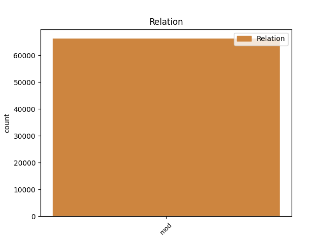
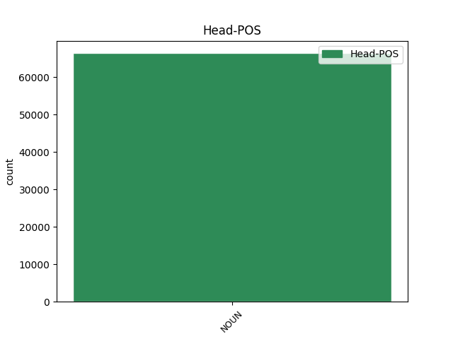
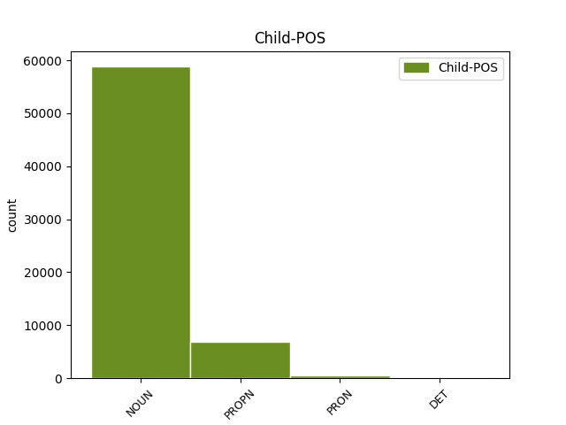

Distribution of features within this leaf



Agreement Rules sorted by frequency.
- When the dependent token is the modifer(mod) of the head token, and the head token is NOUN and the dependent token is NOUN.
1 Ze _ _ _ _ 0 _ _ _
2 zcela _ _ _ _ 0 _ _ _
3 nenápadné _ _ _ _ 0 _ _ _
4 astronomicky _ _ _ _ 0 _ _ _
5 poklidné _ _ _ _ 0 _ _ _
6 disciplíny _ _ _ _ 0 _ _ _
7 se _ _ _ _ 0 _ _ _
8 tak _ _ _ _ 0 _ _ _
9 rázem _ _ _ _ 0 _ _ _
10 stalo _ _ _ _ 0 _ _ _
11 politikum _ _ _ _ 0 _ _ _
12 prvého _ _ _ _ 0 _ _ _
13 řádu _ _ _ _ 0 _ _ _
14 , _ _ _ _ 0 _ _ _
15 kdy _ _ _ _ 0 _ _ _
16 se _ _ _ _ 0 _ _ _
17 v _ _ _ _ 0 _ _ _
18 astronomech _ _ _ _ 0 _ _ _
19 probouzí _ _ _ _ 0 _ _ _
20 " _ _ _ _ 0 _ _ _
21 planetární _ _ _ _ 0 _ _ _
22 ekologický _ _ _ _ 0 _ _ _
23 instinkt _ _ _ _ 0 _ _ _
24 " _ _ _ _ 0 _ _ _
25 ( _ _ _ _ 0 _ _ _
26 nesahejte _ _ _ _ 0 _ _ _
27 nám _ _ _ _ 0 _ _ _
28 na _ _ _ _ 0 _ _ _
29 planetky _ _ _ _ 0 _ _ _
30 : _ _ _ _ 0 _ _ _
31 je _ _ _ _ 0 _ _ _
32 to _ _ _ _ 0 _ _ _
33 neobnovitelné _ _ _ _ 0 _ _ _
34 přírodní _ _ _ _ 0 _ _ _
35 bohatství _ _ _ _ 0 _ _ _
36 ) _ _ _ _ 0 _ _ _
37 , _ _ _ _ 0 _ _ _
38 zatímco _ _ _ _ 0 _ _ _
39 vojenští _ _ _ _ 0 _ _ _
40 experti _ _ _ _ 0 _ _ _
41 cítí _ _ _ _ 0 _ _ _
42 jedinečnou _ _ _ _ 0 _ _ _
43 příležitost _ _ _ _ 0 _ _ _
44 , _ _ _ _ 0 _ _ _
45 jak _ _ _ _ 0 _ _ _
46 protáhnout _ _ _ _ 0 _ _ _
47 strategickou _ _ _ _ 0 _ _ _
48 obrannou _ _ _ _ 0 _ _ _
49 iniciativu _ _ _ _ 0 _ _ _
50 do _ _ _ _ 0 _ _ _
51 21 _ _ _ _ 0 _ _ _
52 . _ _ _ _ 0 _ _ _
53 století _ _ _ _ 0 _ _ _
54 , _ _ _ _ 0 _ _ _
55 a _ _ _ _ 0 _ _ _
56 dokonce _ _ _ _ 0 _ _ _
57 v _ _ _ _ 0 _ _ _
58 ušlechtilém _ _ _ _ 0 _ _ _
59 zájmu _ _ _ _ 0 _ _ _
60 obrany obrana NOUN NNFS2-----A---- Case=Gen|Gender=Fem|Number=Sing|Polarity=Pos 0 _ _ _
61 všeho _ _ _ _ 0 _ _ _
62 lidstva lidstvo NOUN NNNS2-----A---- Case=Gen|Gender=Neut|Number=Sing|Polarity=Pos 60 mod _ SpaceAfter=No
63 . _ _ _ _ 0 _ _ _
1 Výzkumní _ _ _ _ 0 _ _ _
2 pracovníci _ _ _ _ 0 _ _ _
3 firmy _ _ _ _ 0 _ _ _
4 Merck _ _ _ _ 0 _ _ _
5 , _ _ _ _ 0 _ _ _
6 Sharp _ _ _ _ 0 _ _ _
7 and _ _ _ _ 0 _ _ _
8 Dohme _ _ _ _ 0 _ _ _
9 Research _ _ _ _ 0 _ _ _
10 Laboratories _ _ _ _ 0 _ _ _
11 ( _ _ _ _ 0 _ _ _
12 West West PROPN NNMS1-----A---- Animacy=Anim|Case=Nom|Gender=Masc|NameType=Sur|Number=Sing|Polarity=Pos 13 mod _ LId=West-1
13 Point point NOUN NNIS1-----A---- Animacy=Inan|Case=Nom|Gender=Masc|Number=Sing|Polarity=Pos 0 _ _ _
14 , _ _ _ _ 0 _ _ _
15 Pensylvánie _ _ _ _ 0 _ _ _
16 ) _ _ _ _ 0 _ _ _
17 ve _ _ _ _ 0 _ _ _
18 spolupráci _ _ _ _ 0 _ _ _
19 s _ _ _ _ 0 _ _ _
20 vědci _ _ _ _ 0 _ _ _
21 z _ _ _ _ 0 _ _ _
22 řady _ _ _ _ 0 _ _ _
23 dalších _ _ _ _ 0 _ _ _
24 institucí _ _ _ _ 0 _ _ _
25 vyvinuli _ _ _ _ 0 _ _ _
26 a _ _ _ _ 0 _ _ _
27 v _ _ _ _ 0 _ _ _
28 pokusech _ _ _ _ 0 _ _ _
29 na _ _ _ _ 0 _ _ _
30 zvířatech _ _ _ _ 0 _ _ _
31 vyzkoušeli _ _ _ _ 0 _ _ _
32 monoklonální _ _ _ _ 0 _ _ _
33 protilátku _ _ _ _ 0 _ _ _
34 , _ _ _ _ 0 _ _ _
35 která _ _ _ _ 0 _ _ _
36 je _ _ _ _ 0 _ _ _
37 schopna _ _ _ _ 0 _ _ _
38 chránit _ _ _ _ 0 _ _ _
39 organismus _ _ _ _ 0 _ _ _
40 před _ _ _ _ 0 _ _ _
41 infekcí _ _ _ _ 0 _ _ _
42 virem _ _ _ _ 0 _ _ _
43 HIV _ _ _ _ 0 _ _ _
44 , _ _ _ _ 0 _ _ _
45 původcem _ _ _ _ 0 _ _ _
46 AIDS _ _ _ _ 0 _ _ _
47 ( _ _ _ _ 0 _ _ _
48 Nature _ _ _ _ 0 _ _ _
49 355 _ _ _ _ 0 _ _ _
50 , _ _ _ _ 0 _ _ _
51 728 _ _ _ _ 0 _ _ _
52 , _ _ _ _ 0 _ _ _
53 1992 _ _ _ _ 0 _ _ _
54 ) _ _ _ _ 0 _ _ _
55 . _ _ _ _ 0 _ _ _
1 Právě _ _ _ _ 0 _ _ _
2 ono on PRON PPNS1--3------- Case=Nom|Gender=Neut|Number=Sing|Person=3|PronType=Prs 4 mod _ LId=on-1
3 nedávné _ _ _ _ 0 _ _ _
4 přiblížení přiblížení NOUN NNNS1-----A---- Case=Nom|Gender=Neut|Number=Sing|Polarity=Pos 0 _ _ _
5 k _ _ _ _ 0 _ _ _
6 Zemi _ _ _ _ 0 _ _ _
7 pozměnilo _ _ _ _ 0 _ _ _
8 její _ _ _ _ 0 _ _ _
9 dráhu _ _ _ _ 0 _ _ _
10 tak _ _ _ _ 0 _ _ _
11 , _ _ _ _ 0 _ _ _
12 že _ _ _ _ 0 _ _ _
13 při _ _ _ _ 0 _ _ _
14 příštích _ _ _ _ 0 _ _ _
15 setkáních _ _ _ _ 0 _ _ _
16 bude _ _ _ _ 0 _ _ _
17 od _ _ _ _ 0 _ _ _
18 Země _ _ _ _ 0 _ _ _
19 podstatně _ _ _ _ 0 _ _ _
20 dále _ _ _ _ 0 _ _ _
21 než _ _ _ _ 0 _ _ _
22 r _ _ _ _ 0 _ _ _
23 . _ _ _ _ 0 _ _ _
24 1992 _ _ _ _ 0 _ _ _
25 . _ _ _ _ 0 _ _ _
Disagree Examples:
1 Hlasité _ _ _ _ 0 _ _ _
2 přečtení přečtení NOUN NNNS1-----A---- Case=Nom|Gender=Neut|Number=Sing|Polarity=Pos 0 _ _ _
3 dobře _ _ _ _ 0 _ _ _
4 čitelného _ _ _ _ 0 _ _ _
5 textu text NOUN NNIS2-----A---- Animacy=Inan|Case=Gen|Gender=Masc|Number=Sing|Polarity=Pos 2 mod _ _
6 na _ _ _ _ 0 _ _ _
7 stránce _ _ _ _ 0 _ _ _
8 A _ _ _ _ 0 _ _ _
9 4 _ _ _ _ 0 _ _ _
10 , _ _ _ _ 0 _ _ _
11 při _ _ _ _ 0 _ _ _
12 řádkování _ _ _ _ 0 _ _ _
13 1.5 _ _ _ _ 0 _ _ _
14 , _ _ _ _ 0 _ _ _
15 trvá _ _ _ _ 0 _ _ _
16 zhruba _ _ _ _ 0 _ _ _
17 3 _ _ _ _ 0 _ _ _
18 minuty _ _ _ _ 0 _ _ _
19 . _ _ _ _ 0 _ _ _
1 Podle _ _ _ _ 0 _ _ _
2 prospektů _ _ _ _ 0 _ _ _
3 se _ _ _ _ 0 _ _ _
4 faxem _ _ _ _ 0 _ _ _
5 přenese _ _ _ _ 0 _ _ _
6 normalizovaný _ _ _ _ 0 _ _ _
7 obsah obsah NOUN NNIS1-----A---- Animacy=Inan|Case=Nom|Gender=Masc|Number=Sing|Polarity=Pos 0 _ _ _
8 jedné _ _ _ _ 0 _ _ _
9 stránky stránka NOUN NNFS2-----A---- Case=Gen|Gender=Fem|Number=Sing|Polarity=Pos 7 mod _ _
10 A _ _ _ _ 0 _ _ _
11 4 _ _ _ _ 0 _ _ _
12 za _ _ _ _ 0 _ _ _
13 10 _ _ _ _ 0 _ _ _
14 až _ _ _ _ 0 _ _ _
15 30 _ _ _ _ 0 _ _ _
16 sekund _ _ _ _ 0 _ _ _
17 . _ _ _ _ 0 _ _ _
1 Ve _ _ _ _ 0 _ _ _
2 skutečnosti _ _ _ _ 0 _ _ _
3 to _ _ _ _ 0 _ _ _
4 sice _ _ _ _ 0 _ _ _
5 trvá _ _ _ _ 0 _ _ _
6 zhruba _ _ _ _ 0 _ _ _
7 minutu _ _ _ _ 0 _ _ _
8 , _ _ _ _ 0 _ _ _
9 protože _ _ _ _ 0 _ _ _
10 doba doba NOUN NNFS1-----A---- Case=Nom|Gender=Fem|Number=Sing|Polarity=Pos 0 _ _ _
11 přenosu přenos NOUN NNIS2-----A---- Animacy=Inan|Case=Gen|Gender=Masc|Number=Sing|Polarity=Pos 10 mod _ _
12 více _ _ _ _ 0 _ _ _
13 závisí _ _ _ _ 0 _ _ _
14 na _ _ _ _ 0 _ _ _
15 stavu _ _ _ _ 0 _ _ _
16 telefonní _ _ _ _ 0 _ _ _
17 linky _ _ _ _ 0 _ _ _
18 než _ _ _ _ 0 _ _ _
19 na _ _ _ _ 0 _ _ _
20 rychlosti _ _ _ _ 0 _ _ _
21 přístroje _ _ _ _ 0 _ _ _
22 , _ _ _ _ 0 _ _ _
23 ale _ _ _ _ 0 _ _ _
24 i _ _ _ _ 0 _ _ _
25 tak _ _ _ _ 0 _ _ _
26 je _ _ _ _ 0 _ _ _
27 přenos _ _ _ _ 0 _ _ _
28 informace _ _ _ _ 0 _ _ _
29 faxem _ _ _ _ 0 _ _ _
30 zhruba _ _ _ _ 0 _ _ _
31 třikrát _ _ _ _ 0 _ _ _
32 rychlejší _ _ _ _ 0 _ _ _
33 než _ _ _ _ 0 _ _ _
34 řeč _ _ _ _ 0 _ _ _
35 . _ _ _ _ 0 _ _ _
1 Ve _ _ _ _ 0 _ _ _
2 skutečnosti _ _ _ _ 0 _ _ _
3 to _ _ _ _ 0 _ _ _
4 sice _ _ _ _ 0 _ _ _
5 trvá _ _ _ _ 0 _ _ _
6 zhruba _ _ _ _ 0 _ _ _
7 minutu _ _ _ _ 0 _ _ _
8 , _ _ _ _ 0 _ _ _
9 protože _ _ _ _ 0 _ _ _
10 doba _ _ _ _ 0 _ _ _
11 přenosu _ _ _ _ 0 _ _ _
12 více _ _ _ _ 0 _ _ _
13 závisí _ _ _ _ 0 _ _ _
14 na _ _ _ _ 0 _ _ _
15 stavu stav NOUN NNIS6-----A---- Animacy=Inan|Case=Loc|Gender=Masc|Number=Sing|Polarity=Pos 0 _ _ _
16 telefonní _ _ _ _ 0 _ _ _
17 linky linka NOUN NNFS2-----A---- Case=Gen|Gender=Fem|Number=Sing|Polarity=Pos 15 mod _ _
18 než _ _ _ _ 0 _ _ _
19 na _ _ _ _ 0 _ _ _
20 rychlosti _ _ _ _ 0 _ _ _
21 přístroje _ _ _ _ 0 _ _ _
22 , _ _ _ _ 0 _ _ _
23 ale _ _ _ _ 0 _ _ _
24 i _ _ _ _ 0 _ _ _
25 tak _ _ _ _ 0 _ _ _
26 je _ _ _ _ 0 _ _ _
27 přenos _ _ _ _ 0 _ _ _
28 informace _ _ _ _ 0 _ _ _
29 faxem _ _ _ _ 0 _ _ _
30 zhruba _ _ _ _ 0 _ _ _
31 třikrát _ _ _ _ 0 _ _ _
32 rychlejší _ _ _ _ 0 _ _ _
33 než _ _ _ _ 0 _ _ _
34 řeč _ _ _ _ 0 _ _ _
35 . _ _ _ _ 0 _ _ _
1 Ve _ _ _ _ 0 _ _ _
2 skutečnosti _ _ _ _ 0 _ _ _
3 to _ _ _ _ 0 _ _ _
4 sice _ _ _ _ 0 _ _ _
5 trvá _ _ _ _ 0 _ _ _
6 zhruba _ _ _ _ 0 _ _ _
7 minutu _ _ _ _ 0 _ _ _
8 , _ _ _ _ 0 _ _ _
9 protože _ _ _ _ 0 _ _ _
10 doba _ _ _ _ 0 _ _ _
11 přenosu _ _ _ _ 0 _ _ _
12 více _ _ _ _ 0 _ _ _
13 závisí _ _ _ _ 0 _ _ _
14 na _ _ _ _ 0 _ _ _
15 stavu _ _ _ _ 0 _ _ _
16 telefonní _ _ _ _ 0 _ _ _
17 linky _ _ _ _ 0 _ _ _
18 než _ _ _ _ 0 _ _ _
19 na _ _ _ _ 0 _ _ _
20 rychlosti rychlost NOUN NNFS6-----A---- Case=Loc|Gender=Fem|Number=Sing|Polarity=Pos 0 _ _ _
21 přístroje přístroj NOUN NNIS2-----A---- Animacy=Inan|Case=Gen|Gender=Masc|Number=Sing|Polarity=Pos 20 mod _ SpaceAfter=No
22 , _ _ _ _ 0 _ _ _
23 ale _ _ _ _ 0 _ _ _
24 i _ _ _ _ 0 _ _ _
25 tak _ _ _ _ 0 _ _ _
26 je _ _ _ _ 0 _ _ _
27 přenos _ _ _ _ 0 _ _ _
28 informace _ _ _ _ 0 _ _ _
29 faxem _ _ _ _ 0 _ _ _
30 zhruba _ _ _ _ 0 _ _ _
31 třikrát _ _ _ _ 0 _ _ _
32 rychlejší _ _ _ _ 0 _ _ _
33 než _ _ _ _ 0 _ _ _
34 řeč _ _ _ _ 0 _ _ _
35 . _ _ _ _ 0 _ _ _